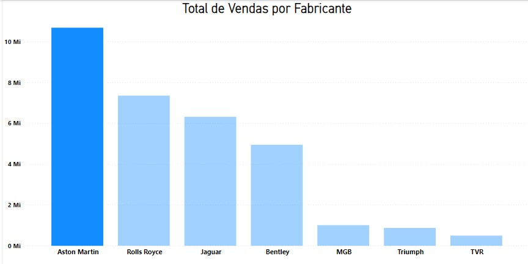
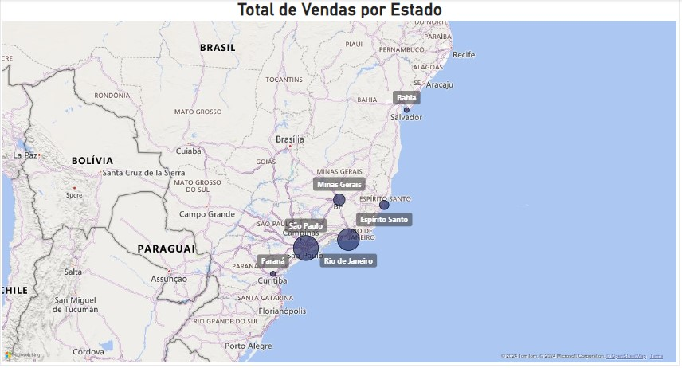
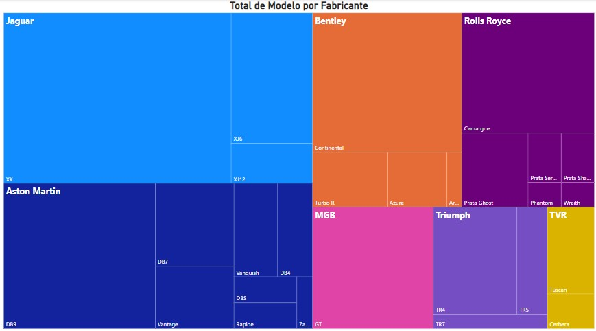

Microsoft Power BI
Microsoft Power BI
Database:
Informações:
Fonte de dados: Dados_Vendas_Carros.
O database é referente aos anos de 2016 até 2019.
Fabricantes:


Regiões:
São Paulo
Minas Gerais
Rio De Janeiro
Bahia
Paraná
Espirito dos Santos
1ª Qual total de vendas por Fabricante ?

2ª Qual total de vendas por Estado ?

3ª Qual o modelo mais vendido?

4ª Qual é total de modelo por fabricante?
